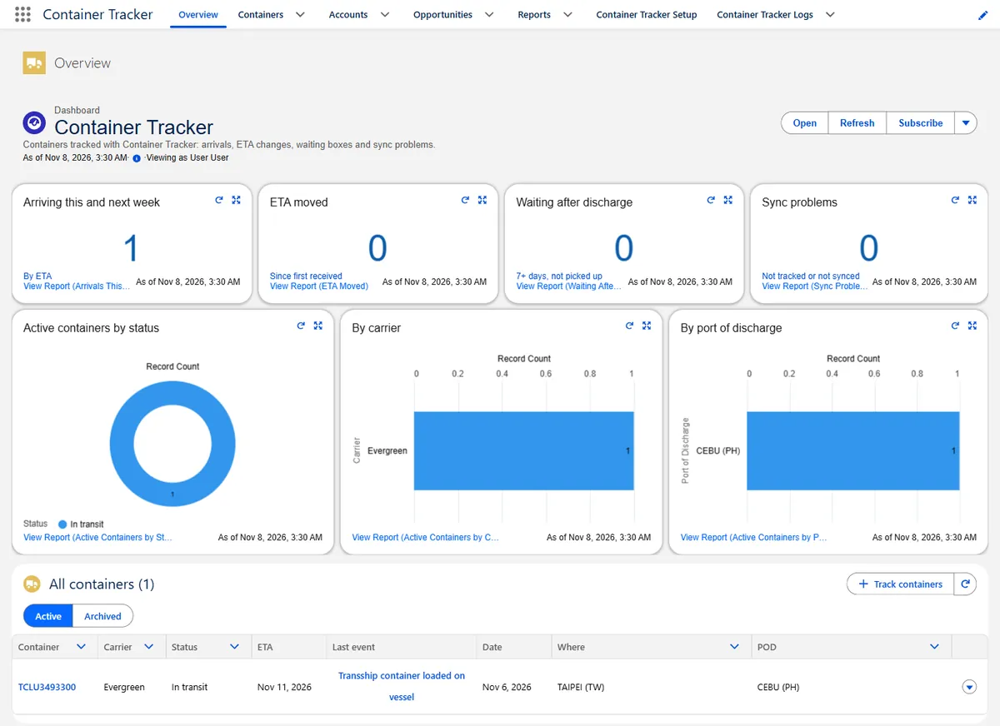
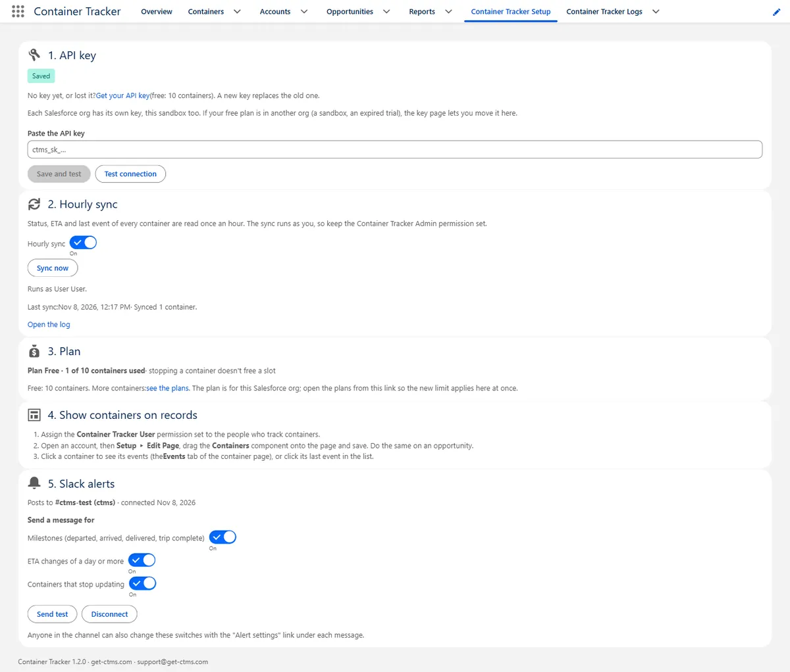
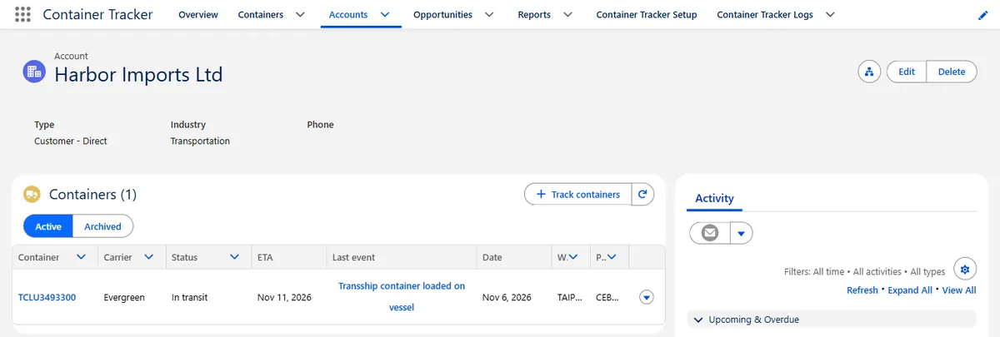
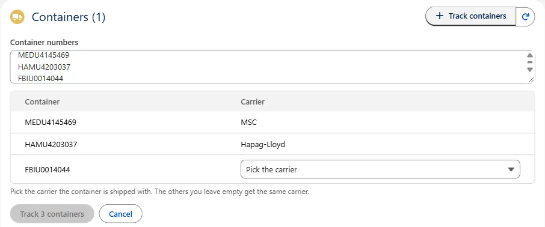
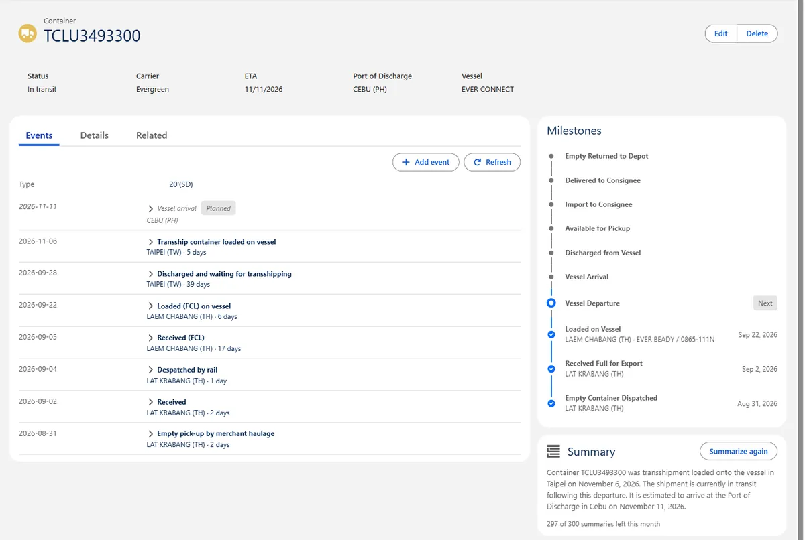
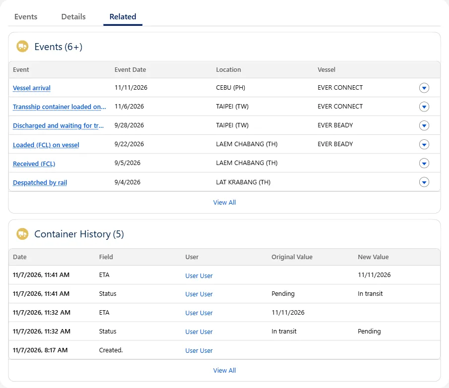

Container Tracker for Salesforce
Container Tracker follows your ocean containers on Salesforce accounts and opportunities. Paste the container numbers on a record, and the package keeps status, ETA, vessel, ports and the last and next event up to date. Every event from the carrier is stored as a Salesforce record, so your reports, list views and dashboards work with it. You don't need carrier accounts or any refreshing.
Carriers tracked automatically: MSC, Maersk, CMA CGM, Hapag-Lloyd, ONE, Yang Ming and Evergreen.

1. What it does
- Track by pasting numbers on an account or an opportunity. The carrier is filled in from the owner code (MSCU → MSC, HLCU → Hapag-Lloyd, …); for leased containers you pick it.
- Imports, Flows and the API: containers created any other way (Data Import Wizard, Data Loader, a Flow, an integration, the New button) are checked and tracked too.
- Hourly sync of status, ETA, vessel, ports of loading and discharge, and the last and next event.
- Events as records (Container Events), so they work in reports. Milestones (loaded, departed, discharged, available, delivered, empty returned) are date fields on the container.
- Add events by hand for something the carrier doesn't show.
- Reports and a dashboard: a report folder and the Overview tab come with the package.
- Summary: a few sentences on where a container is and what happened so far, written when you click Summarize.
- Slack alerts when a container departs, arrives, gets a new ETA or stops updating.
- Field history on containers and events, and an admin log of problems.
2. Install the package
- Click Install in Production or Developer Edition, or Install in a Sandbox, and log in as a Salesforce admin.
- Choose Install for Admins Only and click Install. You give access to your users with the permission sets in the next step.
- When the install has finished, open the App Launcher and pick Container Tracker.
Installing takes a few minutes.
3. Assign the permission sets
In Setup ▸ Permission Sets, assign:
- Container Tracker Admin to yourself (API key, hourly sync, Slack alerts, the log).
- Container Tracker User to the people who track containers.
4. Get your API key
- Open the Container Tracker app ▸ Container Tracker Setup tab ▸ Get your API key. The key page already knows your org.
- Enter your work email. We send you a link.
- Open the link and copy the key.
- Paste the key on the Setup tab and click Save and test. This also turns on the hourly sync.

5. Add containers to your record pages
- Open an account, then Setup ▸ Edit Page.
- Drag the Containers component onto the page and save (activate the page if Salesforce asks).
- Do the same on an opportunity.
Container records come with their own page, nothing to set up there: see The container page.

6. Track containers
In the Containers component (or on the Overview tab), click Track containers and paste one or more container numbers: 4 letters and 7 digits, as printed on the container door. The list shows the carrier for each number. When the owner code doesn't tell the carrier (a leased container, for example TGHU or TCLU), pick it; one pick fills the empty ones below. Click Track.

The first status comes in once the carrier answers; from then on the hourly sync keeps it up to date. Stop tracking archives a container (it moves to Archived, where Track again restarts it). Containers the carrier can't find get the status Can't be tracked with the reason.
7. The container page
- Events tab: every event from the carrier with date, location and vessel, planned ones marked. Click an event for all its fields (facility, voyage, IMO, remarks). Add event records something the carrier doesn't show; Refresh reads the latest events at once.
- Milestones card: the journey so far and what comes next.
- Summary card: click Summarize for a few sentences you can paste into an email. Each click uses one of the month's summaries; the card shows how many are left.

8. Reports and the dashboard
The Container Tracker report folder and dashboard come with the package: arrivals this and next week, ETA moved, containers waiting 7+ days after discharge, sync problems, and active containers by status, carrier and port of discharge. The dashboard is on the Overview tab. To build your own, use the report types Containers and Containers with Events.
9. Slack alerts
- On the Container Tracker Setup tab, under Slack alerts, click Connect Slack (Container Tracker Admin only).
- Slack opens in a new tab: pick the channel and click Allow. Back in Salesforce, click Refresh.
- Choose what gets posted: milestones, ETA changes of a day or more, and containers that stop updating. Send test posts a test message.
Container Tracker checks every 15 minutes and posts only to that channel; it can't read your Slack messages. Open in CTMS in a message opens the Container Tracker app in your org.
10. Field history and the log
- Field history: changes to a container (status, ETA, vessel, ports, milestone dates, account, opportunity, …) and to an event are kept. Open the Related tab of a container, or an event record, to see what changed and when.
- Container Tracker Logs tab (admins): failed calls, a refused API key, background jobs that stopped, installs and upgrades. The Setup tab shows the number of problems in the last 24 hours. Send the log number when you write to support.

11. Updates
When a new version is out, the Setup tab and the Containers component show a banner with the install link. Install it the same way (Install for Admins Only). Your data stays, and you can skip versions.
12. Plans
- 10 containers free per org, with no time limit. One free org per email address.
- Each Salesforce org is its own Container Tracker account with its own containers and plan. A sandbox counts as its own org and needs its own key.
- More containers: the Plan card on the Setup tab ▸ see the plans. The plans are the same as on every other platform, see Pricing.
13. Your data
The package sends only container numbers and carriers (to track them) and your API key (to identify your account). When you connect Slack, it also sends your org's address, so the links in Slack messages open your org. No account names, contacts, opportunity data or other org data leave Salesforce. The API key is stored in a Salesforce External Credential, encrypted and never shown again.
Need help?
Email us at support@get-ctms.com. Please include the container number and carrier if your question is about a specific container, and the log number if the Setup tab shows a problem.